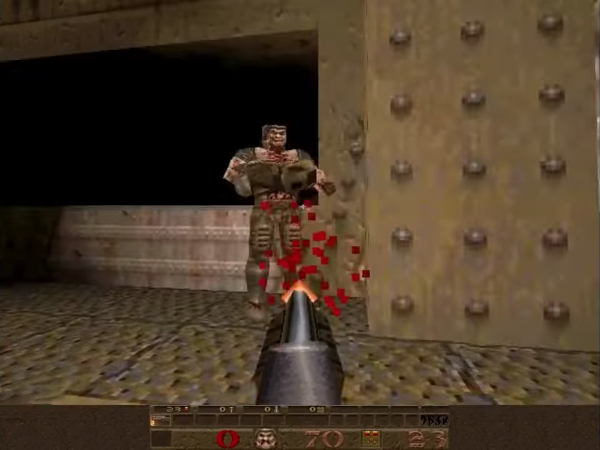
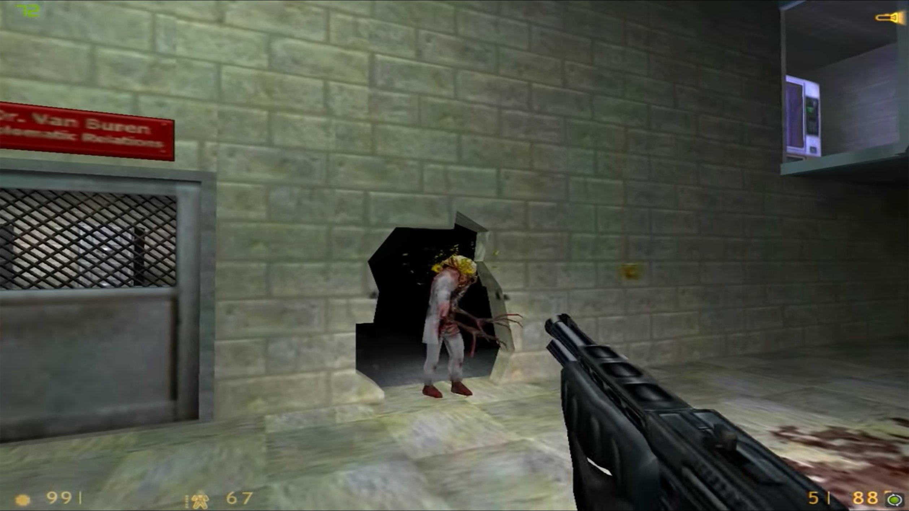
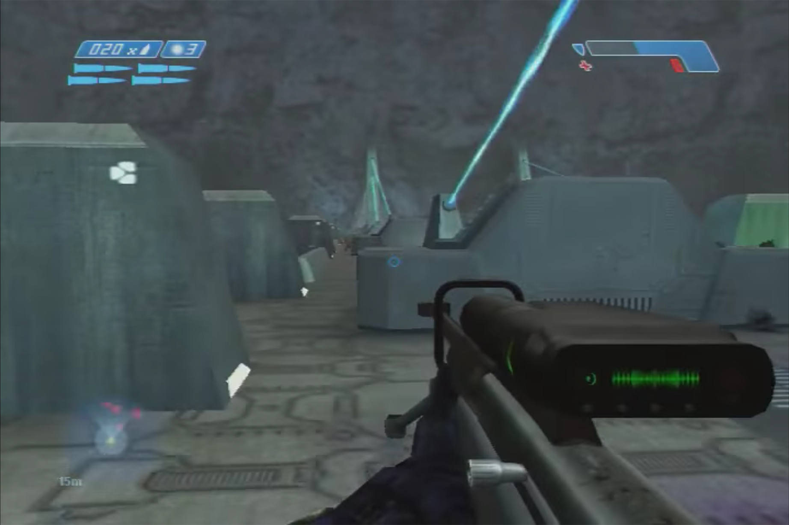
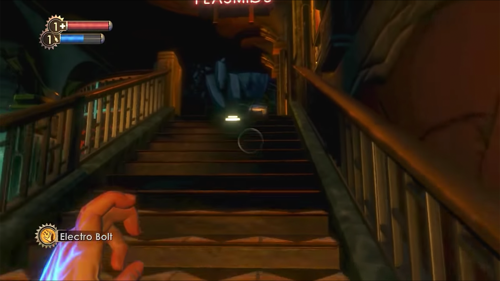
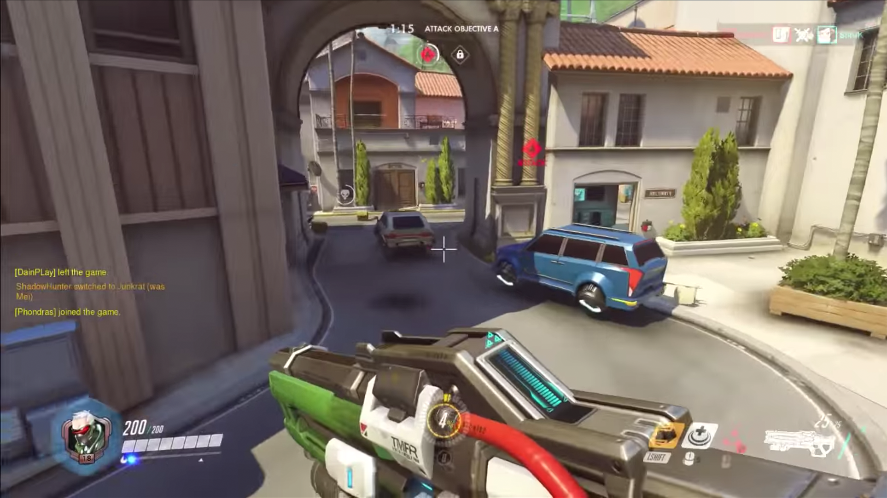
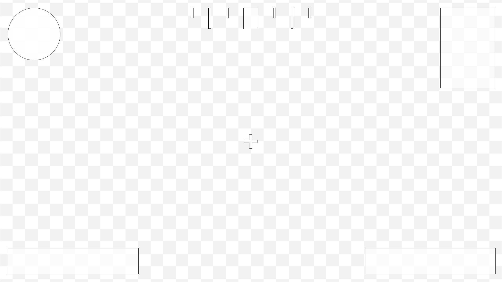
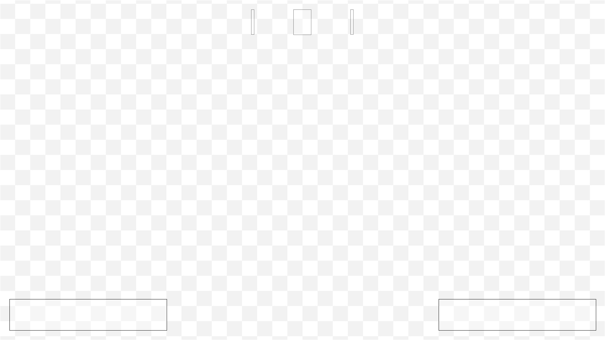
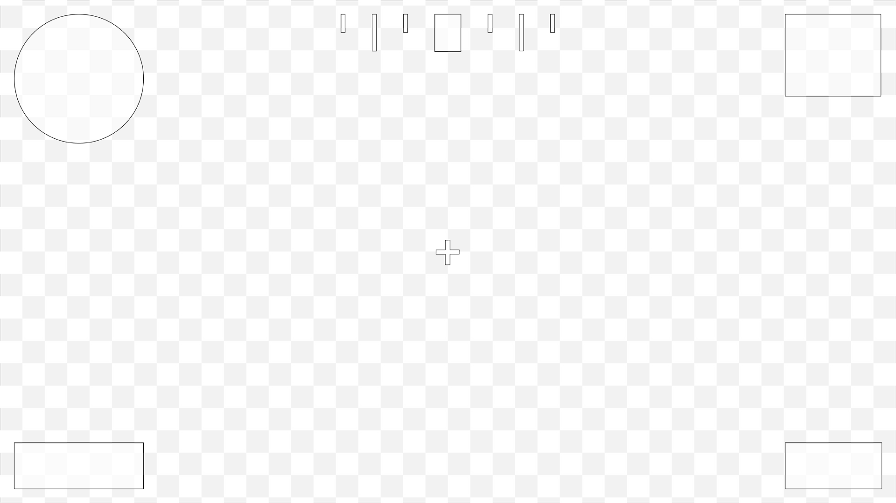

First-person shooters have been a part of my life for as long as I can remember. Below I go through the major players in videogame history and the evolution of their user interface.
- Project Game research, analysis, and design
- Tools Figma
1996 - Quake
Let's start here because it's pretty much the first multiplayer eSports shooter as well as one of the first competitive games my uncles had introduced me to. I could go on about Age of Empires as well but we'll save that for another day.

a true classic with an absolute unit of a UI
We really can't be too hard on one of the pioneers. I mean, look at how feature-packed this UI is! Health(twice), armor, ammo, and even inventory! At first glance I thought about how much of a waste of vertical real estate this was, but then I remembered that everything was letterbox back then. Adding this huge UI basically made your game widescreen.
1998 - Half-Life
One of the greatest games of all time and part of the series that has pretty much been omnipresent throughout my entire life as a gamer. Half-Life brought an extraordinary world and created the template for single-player story-driven games.

this corrupted scientist is giving me flashbacks of adolescent terror
Talk about minimalist. This UI gave you the bare necessities without taking up too much space or being too distracting. However, something is making me feel uneasy and I'm not sure if it's the font or memories of the game.
2000 - Counter-Strike
The game that actually defined eSports. Not only are you focused on eliminating your opponent, but the objective element is thrown into the mix. This format is STILL popular today, even in the rising top games like Valorant.

this is triggering my corner-peek anxiety
Basic UI that is very similar to what we saw in Half-Life. This is where I learned that CS was actually a mod of Half-Life. Mind blown, can't believe I never knew that. But yeah same ol' basics at the bottom of the screen but we're adding a map and kill feed at the top. Font still looks murky.
2001 - Halo: Combat Evolved
A massive Xbox hit and the series that stole my childhood. It remains my favorite competitive multiplayer game and claimed copius amounts of my time with the co-op campaign.

cue the electric guitar and echo choir
Now we're starting to add some style to the UI. The ammo might be a little too stylized but it was pretty neat to have the different bullet illustrations. The addition of FOV to the radar was helpful for view awareness. Displaying health as a progress bar rather than a number was a good visual improvement and allowed the user to understand their status quickly .
2007 - BioShock
Forever defining the 1st-person horror genre and an instant hall of fame campaign. The story and art direction was incredible and I find myself still obsessed with the series.

it will never not be awkward to talk about big daddy
Minimalist with style. Since this was a single-player game, there was a lot of flexibility to remove UI elements that distracted from the immersive experience. This UI breaks it down to the bare minimum: health, ammo, and weapon. Extra points for the steampunk vibes.
2016 - Overwatch
The last game to top the eSports arenas before battle royales took the limelight. Overwatch meshed together all the great things we loved about games and is still seeing updates 4 years later.

Counter-Strike meets League of Legends meets Call of Duty built from Team Fortress
A blend of gaming mechanics calls for a lot of complex UI elements. Health, ammo, abilities, kill feed, and object are all aesthetically placed in an efficient manner.
My Recommendation
I believe there should be 3 options for your standard single + multiplayer game
- Default View
- Immersive View
- Competitive View
Default
The standard default view which is user-friendly and tailored to the casual player. Strong assistance and contrast for all UI elements to allow intentional interaction throughout the gaming experience.

Immersive
Immersive goes minimal and lets the engagement take center stage. UI is focused on allowing the user to flow through the game with minimal distractions. Health, ammo, and objective have the opacity decreased and non-essential UI elements are removed.

Competitive
Competitive UIs are iterative and take feedback from competitive gaming. We are maximizing FOV real estate and utility. UI elements like the map are increased while health, ammo, and kill feed are decreased in size to reduce visual clutter.
